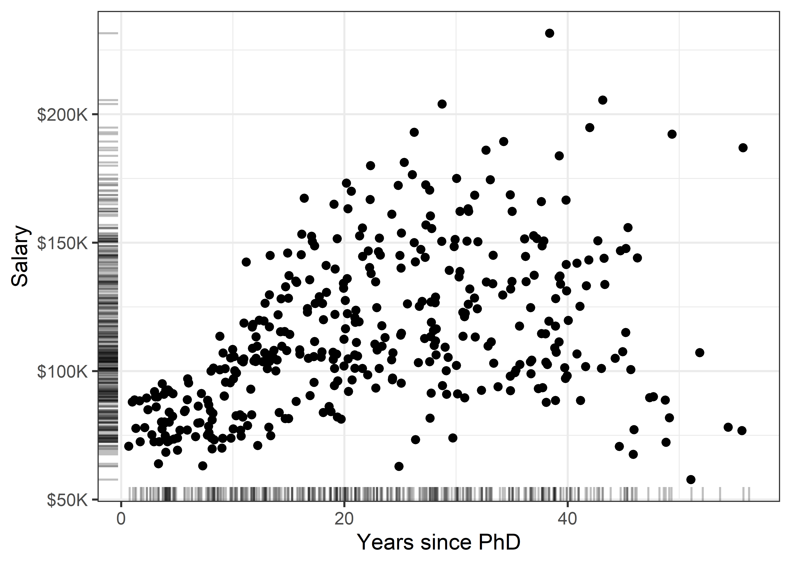
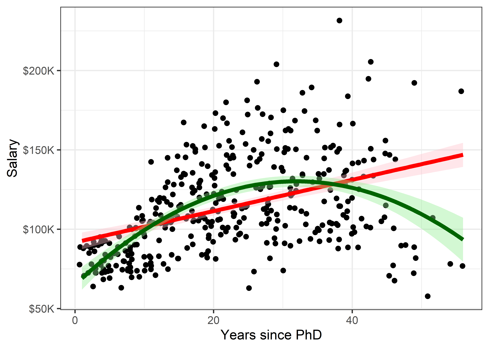
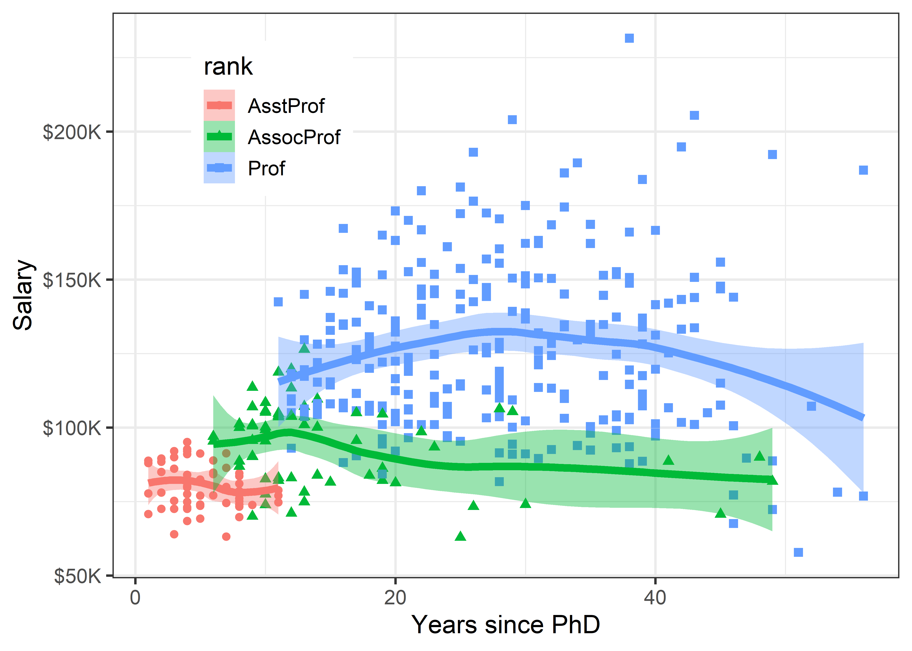
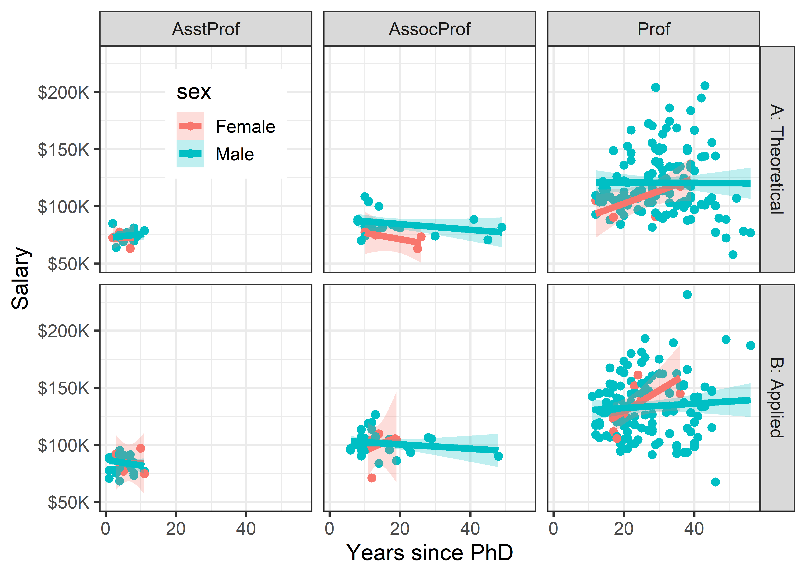
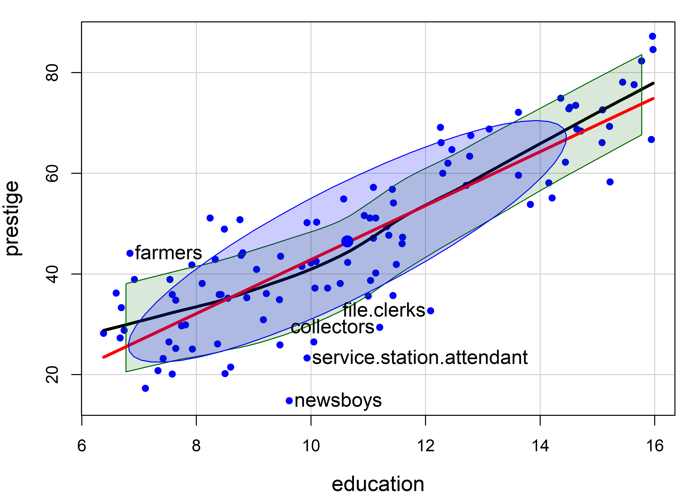
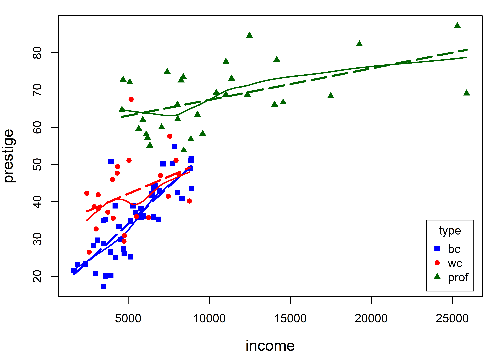
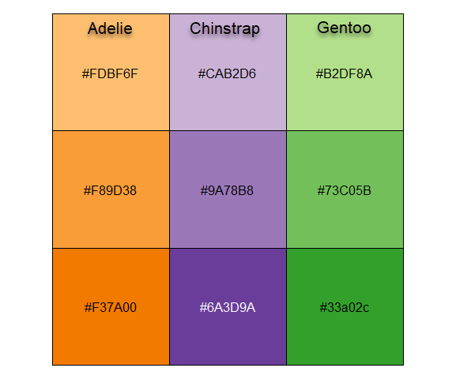
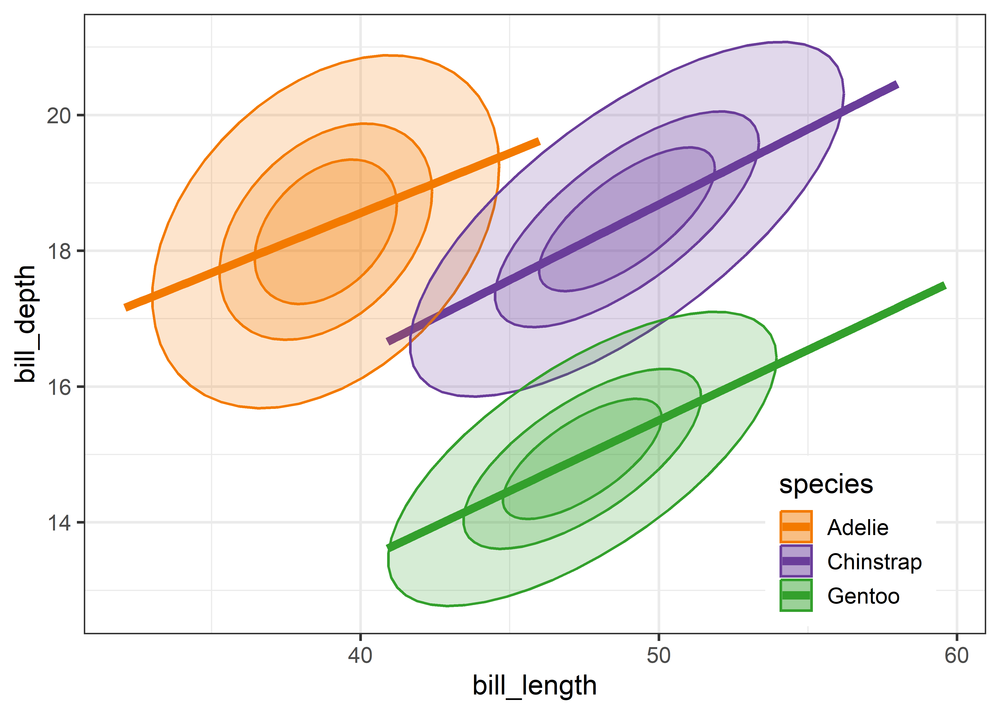
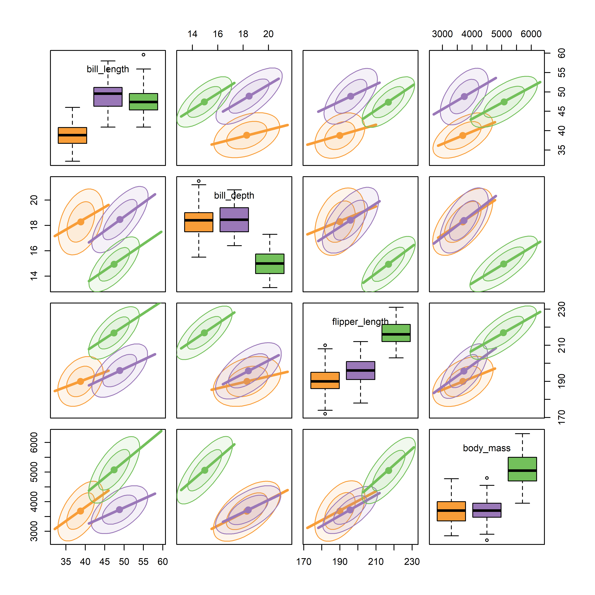

library(car)
library(ggplot2)
library(dplyr)
library(tidyr)
library(corrplot)
library(corrgram)
library(GGally)
library(ggdensity)
library(patchwork)
library(ggpcp)3 Plots of Multivariate Data
There is no excuse for failing to plot and look.
The greatest value of a picture is when it forces us to notice what we never expected to see. — John W. Tukey, Exploratory Data Analysis, 1977
These quotes from John Tukey remind us that data analysis should nearly always start with graphs to help us understand the main features of our data. It is important to understand the general patterns and trends: Are relationships increasing or decreasing? Are they approximately linear or non-linear? But it is also important to spot anomalies: “unusual” observations, groups of points that seem to differ from the rest, and so forth. As we saw with Anscombe’s quartet (sec-anscombe) numerical summaries hide features that are immediately apparent in a plot.
This chapter introduces a toolbox of basic graphical methods for visualizing multivariate datasets. It starts with some simple techniques to enhance the basic scatterplot with graphical annotations such as fitted lines, curves and data ellipses to summarize the relation between two variables.
To visualize more than two variables, we can view all pairs of variables in a scatterplot matrix or shift gears entirely to show multiple variables along a set of parallel axes. As the number of variables increases, we may need to suppress details with stronger summaries for a high-level reconnaissance of our data terrain, as we do by zooming out on a map. For example, we can simply remove the data points or make them nearly transparent to focus on the visual summaries provided by fitted lines or other graphical summaries.
Packages
In this chapter I use the following packages. Load them now:
3.1 Bivariate summaries
The basic scatterplot is the workhorse of multivariate data visualization, showing how one variable, \(y\), often an outcome to be explained by or varies with another, \(x\). It is a building block for many useful techniques, so it is helpful to understand how it can be used as a tool for thinking in a wider, multivariate context.
The essential idea is that we can start with a simple version of the scatterplot and add annotations to show interesting features more clearly. We consider the following here:
- Smoothers: Showing overall trends, perhaps in several forms, as visual summaries such as fitted regression lines or curves and nonparametric smoothers.
- Stratifiers: Using color, shape or other features to identify subgroups; more generally, conditioning on other variables in multi-panel displays;
- Data ellipses: A compact 2D visual summary of bivariate linear relations and uncertainty assuming normality; more generally, contour plots of bivariate density.
Example: Academic salaries
Let’s start with data on the academic salaries of faculty members collected at a U.S. college for the purpose of assessing salary differences between male and female faculty members, and perhaps address anomalies in compensation. The dataset carData::Salaries gives data on nine-month salaries and other variables for 397 faculty members in the 2008-2009 academic year.
data(Salaries, package = "carData")
str(Salaries)
#> 'data.frame': 397 obs. of 6 variables:
#> $ rank : Factor w/ 3 levels "AsstProf","AssocProf",..: 3 3 1 3 3 2 3 3 3 3 ...
#> $ discipline : Factor w/ 2 levels "A","B": 2 2 2 2 2 2 2 2 2 2 ...
#> $ yrs.since.phd: int 19 20 4 45 40 6 30 45 21 18 ...
#> $ yrs.service : int 18 16 3 39 41 6 23 45 20 18 ...
#> $ sex : Factor w/ 2 levels "Female","Male": 2 2 2 2 2 2 2 2 2 1 ...
#> $ salary : int 139750 173200 79750 115000 141500 97000 175000 147765 119250 129000 ...The most obvious, but perhaps naive, predictor of salary is years.since.phd. For simplicity, I’ll refer to this as years of “experience.” Before looking at differences between males and females, we would want consider faculty rank (related also to yrs.service) and discipline, recorded here as A (“theoretical” departments) or B (“applied” departments). But, for a basic plot, we will ignore these for now to focus on what can be learned from plot annotations.
library(ggplot2)
gg1 <- ggplot(Salaries,
aes(x = yrs.since.phd, y = salary)) +
geom_jitter(size = 2) +
scale_y_continuous(labels = scales::dollar_format(
prefix="$", scale = 0.001, suffix = "K")) +
labs(x = "Years since PhD",
y = "Salary")
gg1
There is quite a lot we can see “just by looking” at this simple plot, but the main things are:
- Salary increases generally from 0 - 40 years since the PhD;
- Variability in salary increases among those with the same experience, a “fan-shaped” pattern that signals a violation of homogeneity of variance in simple regression;
- Data beyond 50 years is thin, but there are some quite low salaries there.
3.1.1 Smoothers
Smoothers are among the most useful graphical annotations you can add to such plots, giving a visual summary of how \(y\) changes with \(x\). The most common smoother is a line showing the linear regression for \(y\) given \(x\), expressed in math notation as \(\mathbb{E} (y | x) = b_0 + b_1 x\). If there is doubt that a linear relation is an adequate summary, you can try a quadratic or other polynomial smoothers.
In ggplot2, these are easily added to a plot using geom_smooth() with method = "lm", and a model formula, which (by default) is y ~ x for a linear relation or y ~ poly(x, k) for a polynomial of degree \(k\).
Code
gg1 +
geom_smooth(method = "lm", formula = "y ~ x",
color = "red", fill= "red",
linewidth = 2) +
geom_smooth(method = "lm", formula = "y ~ poly(x,2)",
color = "darkgreen", fill = "darkgreen",
linewidth = 2) 
This serves to highlight some of our impressions from the basic scatterplot shown in Figure fig-Salaries-scat, making them more apparent. And that’s precisely the point: the regression smoother draws attention to a possible pattern that we can consider as a visual summary of the data. You can think of this as showing what a linear (or quadratic) regression “sees” in the data. Statistical tests can help you decide if there is more evidence for a quadratic fit compared to the simpler linear relation.
It is useful to also show some indication of uncertainty (or inversely, precision) associated with the predicted values. Both the linear and quadratic trends are shown in Figure fig-Salaries-lm with 95% pointwise confidence bands. These are necessarily narrower in the center of the range of \(x\) where there is typically more data; they get wider toward the highest values of experience where the data are thinner.
3.1.1.1 Non-parametric smoothers
The most generally useful idea is a smoother that tracks an average value, \(\mathbb{E} (y | x)\), of \(y\) as \(x\) varies across its’ range without assuming any particular functional form, and so avoiding the necessity to choose among y ~ poly(x, 1), or y ~ poly(x, 2), or y ~ poly(x, 3), etc.
Non-parametric smoothers attempt to estimate \(\mathbb{E} (y | x) = f(x)\) where \(f(x)\) is some smooth function. These typically use a collection of weighted local regressions for each \(x_i\) within a window centered at that value. In the method called lowess or loess (Cleveland, 1979; Cleveland & Devlin, 1988), a weight function is applied, giving greatest weight to \(x_i\) and a weight of 0 outside a window containing a certain fraction, \(s\), called span, of the nearest neighbors of \(x_i\). The fraction, \(s\), is usually within the range \(1/3 \le s \le 2/3\), and it determines the smoothness of the resulting curve; smaller values produce a wigglier curve and larger values giving a smoother fit (an optimal span can be determined by \(k\)-fold cross-validation to minimize a measure of overall error of approximation).
Non-parametric regression is a broad topic; see Fox (2016), Ch. 18 for a more general treatment and Wood (2006) for generalized additive models, fit using method = "gam" in ggplot2, which is the default when the largest group has more than 1,000 observations.
Figure fig-Salaries-loess shows the addition of a loess smooth to the plot in Figure fig-Salaries-lm, suppressing the confidence band for the linear regression. The loess fit is nearly coincident with the quadratic fit, but has a slightly wider confidence band.
Code
gg1 +
geom_smooth(method = "loess", formula = "y ~ x",
color = "blue", fill = scales::muted("blue"),
linewidth = 2) +
geom_smooth(method = "lm", formula = "y ~ x", se = FALSE,
color = "red",
linewidth = 2) +
geom_smooth(method = "lm", formula = "y ~ poly(x,2)",
color = "darkgreen", fill = "lightgreen",
linewidth = 2) 
But now comes an important question: is it reasonable that academic salary should increase up to about 40 years since the PhD degree and then decline? The predicted salary for someone still working 50 years after earning their degree is about the same as a person at 15 years. What else is going on here?
3.1.2 Stratifiers
Very often, we have a main relationship of interest, but various groups in the data are identified by discrete factors (like faculty rank and sex, their type of discipline here), or there are quantitative predictors for which the main relation might vary. In the language of statistical models such effects are interaction terms, as in y ~ group + x + group:x, where the term group:x fits a different slope for each group and the grouping variable is often called a moderator variable. Common moderator variables are ethnicity, health status, social class and level of education. Moderators can also be continuous variables as in y ~ x1 + x2 + x1:x2.
I call these stratifiers, recognizing that we should consider breaking down the overall relation to see whether and how it changes over such “other” variables. Such variables are most often factors, but we can cut a continuous variable into ranges (shingles) and do the same graphically. There are two general stratifying graphical techniques:
Grouping: Identify subgroups in the data by assigning different visual attributes, such as color, shape, line style, etc. within a single plot. This is quite natural for factors; quantitative predictors can be accommodated by cutting their range into ordered intervals. Grouping has the advantage that the levels of a grouping variable can be shown within the same plot, facilitating direct comparison.
Conditioning: Showing subgroups in different plot panels. This has the advantages that relations for the individual groups more easily discerned and one can easily stratify by two (or more) other variables jointly, but visual comparison is more difficult because the eye must scan from one panel to another.
History Corner
Recognition of the roles of visual grouping by factors within a panel and conditioning in multi-panel displays was an important advance in the development of modern statistical graphics. It began at A.T.&T. Bell Labs in Murray Hill, NJ in conjunction with the S language, the mother of R.
Conditioning displays (originally called coplots (Chambers & Hastie, 1991)) are simply a collection of 1D, 2D or 3D plots separate panels for subsets of the data broken down by one or more factors, or, for quantitative variables, subdivided into a factor with several overlapping intervals (shingles). The first implementation was in Trellis plots Becker et al. (1996);Cleveland (1985).
Trellis displays were extended in the lattice package (Sarkar, 2023), which offered:
- A graphing syntax similar to that used in statistical model formulas:
y ~ x | gconditions the data by the levels ofg, with|read as “given”; two or more conditioning are specified asy ~ x | g1 + g2 + ..., with+read as “and”. - Panel functions define what is plotted in a given panel.
panel.xyplot()is the default for scatterplots, plotting points, but you can addpanel.lmline()for regression lines,latticeExtra::panel.smoother()for loess smooths and a wide variety of others.
The car package (Fox et al., 2023) supports this graphing syntax in many of its functions. ggplot2 does not; it uses aesthetics (aes()), which map variables in the data to visual characteristics in displays.
The most obvious variable that affects academic salary is rank, because faculty typically get an increase in salary with a promotion that carries through in their future salary. What can we see if we group by rank and fit a separate smoothed curve for each?
In ggplot2 thinking, grouping is accomplished simply by adding an aesthetic, such as color = rank. What happens then is that points, lines, smooths and other geom_*() inherit the feature that they are differentiated by color. In the case of geom_smooth(), we get a separate fit for each subset of the data, according to rank.
Code
# make some re-useable pieces to avoid repetitions
scale_salary <- scale_y_continuous(
labels = scales::dollar_format(prefix="$",
scale = 0.001,
suffix = "K"))
# position the legend inside the plot
legend_pos <- theme(legend.position = c(.1, 0.95),
legend.justification = c(0, 1))
ggplot(Salaries,
aes(x = yrs.since.phd, y = salary,
color = rank)) +
geom_point() +
scale_salary +
labs(x = "Years since PhD",
y = "Salary") +
geom_smooth(aes(fill = rank),
method = "loess", formula = "y ~ x",
linewidth = 2) +
legend_pos
Well, there is a different story here. Salaries generally occupy separate levels, increasing with academic rank. The horizontal extents of the smoothed curves show their ranges. Within each rank there is some initial increase after promotion, and then some tendency to decline with increasing years. But, by and large, years since the PhD doesn’t make that much difference once we’ve taken academic rank into account.
What about the discipline which is classified, perhaps peculiarly, as “theoretical” vs. “applied”? The values are just "A" and "B", so I map these to more meaningful labels before making the plot.
Code
Salaries <- Salaries |>
mutate(discipline = factor(discipline,
labels = c("A: Theoretical", "B: Applied")))
Salaries |>
ggplot(aes(x = yrs.since.phd, y = salary, color = discipline)) +
geom_point() +
scale_salary +
geom_smooth(aes(fill = discipline ),
method = "loess", formula = "y ~ x",
linewidth = 2) +
labs(x = "Years since PhD",
y = "Salary") +
legend_pos 
The story in Figure fig-Salaries-discipline is again different. Faculty in applied disciplines on average earn about 10,000$ more per year on average than their theoretical colleagues.
Salaries |>
group_by(discipline) |>
summarize(mean = mean(salary))
#> # A tibble: 2 × 2
#> discipline mean
#> <fct> <dbl>
#> 1 A: Theoretical 108548.
#> 2 B: Applied 118029.For both groups, there is an approximately linear relation up to about 30–40 years, but the smoothed curves then diverge into the region where the data is thinner.
3.1.3 Conditioning
The previous plots use grouping by color to plot the data for different subsets inside the same plot window, making comparison among groups easier, because they can be directly compared along a common vertical scale 1. This gets messy, however, when there are more than just a few levels, or worse—when there are two (or more) variables for which we want to show separate effects. In such cases, we can plot separate panels using the ggplot2 concept of faceting. There are two options: facet_wrap() takes one or more conditioning variables and produces a ribbon of plots for each combination of levels; facet_grid(row ~ col) takes two or more conditioning variables and arranges the plots in a 2D array identified by the row and col variables.
Let’s look at salary broken down by the combinations of discipline and rank. Here, I chose to stratify using color by rank within each of panels faceting by discipline. Because there is more going on in this plot, a linear smooth is used to represent the trend.
Code
Salaries |>
ggplot(aes(x = yrs.since.phd, y = salary, color = rank)) +
geom_point() +
scale_salary +
labs(x = "Years since PhD",
y = "Salary") +
geom_smooth(aes(fill = rank),
method = "lm", formula = "y ~ x",
linewidth = 2) +
facet_wrap(~ discipline) +
legend_pos
Once both of these factors are taken into account, there does not seem to be much impact of years of service. Salaries in theoretical disciplines are noticeably greater than those in applied disciplines at all ranks, and there are even greater differences among ranks.
Finally, to shed light on the question that motivated this example— are there anomalous differences in salary for men and women— we can look at differences in salary according to sex, when discipline and rank are taken into account. To do this graphically, condition by both variables, but use facet_grid(discipline ~ rank) to arrange their combinations in a grid whose rows are the levels of discipline and columns are those of rank. I want to make the comparison of males and females most direct, so I use color = sex to stratify the panels. The smoothed regression lines and error bands are calculated separately for each combination of discipline, rank and sex.
Code
Salaries |>
ggplot(aes(x = yrs.since.phd, y = salary, color = sex)) +
geom_point() +
scale_salary +
labs(x = "Years since PhD",
y = "Salary") +
geom_smooth(aes(fill = sex),
method = "lm", formula = "y ~ x",
linewidth = 2) +
facet_grid(discipline ~ rank) +
theme_bw(base_size = 14) +
legend_pos
3.1.4 Data Ellipses
The data ellipse (Monette, 1990), or concentration ellipse (Dempster, 1969) is a remarkably simple and effective display for viewing and understanding bivariate relationships in multivariate data. The data ellipse is typically used to add a visual summary to a scatterplot, that shows all together the means, standard deviations, correlation, and slope of the regression line for two variables, perhaps stratified by another variable. Under the classical assumption that the data are bivariate normally distributed, the data ellipse is also a sufficient visual summary, in the sense that it captures all relevant features of the data. See Friendly et al. (2013) for a complete discussion of the role of ellipsoids in statistical data visualization.
It is based on the idea that in a bivariate normal distribution, the contours of equal probability form a series of concentric ellipses. If the variables were uncorrelated and had the same variances, these would be circles, and Euclidean distance would measure the distance of each observation from the mean. When the variables are correlated, a different measure, Mahalanobis distance is the proper measure of how far a point is from the mean, taking the correlation into account.

To illustrate, Figure fig-mahalanobis shows a scatterplot with labels for two points, “A” and “B”. Which is further from the mean, “X”? A contour of constant Euclidean distance, shown by the red dashed circle, ignores the apparent negative correlation, so point “A” is further. The blue ellipse for Mahalanobis distance takes the correlation into account, so point “B” has a greater distance from the mean.
Mathematically, Euclidean (squared) distance for \(p\) variables, \(j = 1, 2, \dots , p\), is just a generalization of the square of a univariate standardized (\(z\)) score, \(z^2 = [(y - \bar{y}) / s]^2\),
\[ D_E^2 (\mathbf{y}) = \sum_j^p z_j^2 = \mathbf{z}^T \mathbf{z} = (\mathbf{y} - \bar{\mathbf{y}})^T \operatorname{diag}(\mathbf{S})^{-1} (\mathbf{y} - \bar{\mathbf{y}}) \; , \] where \(\mathbf{S}\) is the sample variance-covariance matrix, \(\mathbf{S} = ({n-1})^{-1} \sum_{i=1}^n (\mathbf{y}_i - \bar{\mathbf{y}})^T (\mathbf{y}_i - \bar{\mathbf{y}})\).
Mahalanobis’ distance takes the correlations into account simply by using the covariances as well as the variances, \[ D_M^2 (\mathbf{y}) = (\mathbf{y} - \bar{\mathbf{y}})^T S^{-1} (\mathbf{y} - \bar{\mathbf{y}}) \; . \] For \(p\) variables, the data ellipsoid \(\mathcal{E}_c\) of size \(c\) is a \(p\)-dimensional ellipse, defined as the set of points \(\mathbf{y} = (y_1, y_2, \dots y_p)\) whose squared Mahalanobis distance, \(D_M^2 ( \mathbf{y} )\) is less than or equal to \(c^2\).
When \(\mathbf{y}\) is (at least approximately) bivariate normal, \(D_M^2(\mathbf{y})\) has a large-sample \(\chi^2_2\) distribution (\(\chi^2\) with 2 df), so taking \(c^2 = \chi^2_2 (0.68) = 2.28\) gives a “1 standard deviation bivariate ellipse,” an analog of the standard interval \(\bar{y} \pm 1 s\), while \(c^2 = \chi^2_2 (0.95) = 5.99 \approx 6\) gives a data ellipse of 95% coverage.
3.1.4.1 Properties
The essential ideas of correlation and regression and their relation to ellipses go back to Galton (1886). Galton’s goal was to predict (or explain) how a heritable trait, \(Y\), (e.g., height) of children was related to that of their parents, \(X\). He made a semi-graphic table of the frequencies of 928 observations of the average height of father and mother versus the height of their child, shown in Figure fig-galton-corr. He then drew smoothed contour lines of equal frequencies and had the wonderful visual insight that these formed concentric shapes that were tolerably close to ellipses. He then calculated summaries, \(\text{Ave}(Y | X)\), and, for symmetry, \(\text{Ave}(X | Y)\), and plotted these as lines of means on his diagram. Lo and behold, he had a second visual insight: the lines of means of (\(Y | X\)) and (\(X | Y\)) corresponded approximately to the loci of horizontal and vertical tangents to the concentric ellipses. To complete the picture, he added lines showing the major and minor axes of the family of ellipses (which turned out to be the principal components) with the result shown in Figure fig-galton-corr.

For two variables, \(x\) and \(y\), the remarkable properties of the data ellipse are illustrated in Figure fig-galton-ellipse-r, a modern reconstruction of Galton’s diagram.

The ellipses have the mean vector \((\bar{x}, \bar{y})\) as their center.
The lengths of arms of the central cross show the standard deviations of the variables, which correspond to the shadows of the ellipse covering 40% of the data. These are the bivariate analogs of the standard intervals \(\bar{x} \pm 1 s_x\) and \(\bar{y} \pm 1 s_y\).
More generally, shadows (projections) on the coordinate axes, or any linear combination of them, give any standard interval, \(\bar{x} \pm k s_x\) and \(\bar{y} \pm k s_y\). Those with \(k=1, 1.5, 2.45\), have bivariate coverage 40%, 68% and 95% respectively, corresponding to these quantiles of the \(\chi^2\) distribution with 2 degrees of freedom, i.e., \(\chi^2_2 (.40) \approx 1^2\), \(\chi^2_2 (.68) \approx 1.5^2\), and \(\chi^2_2 (.95) \approx 2.45\). The shadows of the 68% ellipse are the bivariate analog of a univariate \(\bar{x} \pm 1 s_x\) interval.
The regression line predicting \(y\) from \(x\) goes through the points where the ellipses have vertical tangents. The other regression line, predicting \(x\) from \(y\) goes through the points of horizontal tangency.
The correlation \(r(x, y)\) is the ratio of the vertical segment from the mean of \(y\) to the regression line to the vertical segment going to the top of the ellipse as shown at the right of the figure. It is \(r = 0.46\) in this example.
The residual standard deviation, \(s_e = \sqrt{MSE} = \sqrt{\Sigma (y - \bar{y})^2 / n-2}\), is the half-length of the ellipse at the mean \(\bar{x}\).
Because Galton’s values of parent and child height were recorded in class intervals of 1 in., they are shown as sunflower symbols in Figure fig-galton-ellipse-r, with multiple ‘petals’ reflecting the number of observations at each location. This plot (except for annotations) is constructed using sunflowerplot() and car::dataEllipse() for the ellipses.
data(Galton, package = "HistData")
sunflowerplot(parent ~ child, data=Galton,
xlim=c(61,75),
ylim=c(61,75),
seg.col="black",
xlab="Child height",
ylab="Mid Parent height")
y.x <- lm(parent ~ child, data=Galton) # regression of y on x
abline(y.x, lwd=2)
x.y <- lm(child ~ parent, data=Galton) # regression of x on y
cc <- coef(x.y)
abline(-cc[1]/cc[2], 1/cc[2], lwd=2, col="gray")
with(Galton,
car::dataEllipse(child, parent,
plot.points=FALSE,
levels=c(0.40, 0.68, 0.95),
lty=1:3)
)3.1.4.2 R functions for data ellipses
A number of packages provide functions for drawing data ellipses in a scatterplot, with various features.
car::scatterplot(): uses base R graphics to draw 2D scatterplots, with a wide variety of plot enhancements including linear and non-parametric smoothers (loess, gam), a formula method, e.g.,y ~ x | group, and marking points and lines using symbol shape, color, etc. Importantly, the car package generally allows automatic identification of “noteworthy” points by their labels in the plot using a variety of methods. For example,method = "mahal"labels cases with the most extreme Mahalanobis distances;method = "r"selects points according to their value ofabs(y), which is appropriate in residual plots.car::dataEllipse(): plots classical or robust data (usingMASS::cov/trob()) ellipses for one or more groups, with the same facilities for point identification.heplots::covEllipses(): draws classical or robust data ellipses for one or more groups in a one-way design and optionally for the pooled total sample, where the focus is on homogeneity of within-group covariance matrices.ggplot2::stat_ellipse(): uses the calculation methods ofcar::dataEllipse()to add unfilled (geom = "path") or filled (geom = polygon") data ellipses in aggplotscatterplot, using inherited aesthetics.
3.1.4.3 Example: Canadian occupational prestige
These examples use the data on the prestige of 102 occupational categories and other measures from the 1971 Canadian Census, recorded in carData::Prestige. Our interest is in understanding how prestige (the Pineo-Porter (Pineo & Porter, 2008) prestige score for an occupational category, derived from a social survey) is related to census measures of the average education, income, percent women of incumbents in those occupations. Occupation type is a factor with levels "bc" (blue collar), "wc" (white collar) and "prof" (professional).
data(Prestige, package="carData")
# `type` is really an ordered factor. Make it so.
Prestige$type <- ordered(Prestige$type,
levels=c("bc", "wc", "prof"))
str(Prestige)
#> 'data.frame': 102 obs. of 6 variables:
#> $ education: num 13.1 12.3 12.8 11.4 14.6 ...
#> $ income : int 12351 25879 9271 8865 8403 11030 8258 14163 11377 11023 ...
#> $ women : num 11.16 4.02 15.7 9.11 11.68 ...
#> $ prestige : num 68.8 69.1 63.4 56.8 73.5 77.6 72.6 78.1 73.1 68.8 ...
#> $ census : int 1113 1130 1171 1175 2111 2113 2133 2141 2143 2153 ...
#> $ type : Ord.factor w/ 3 levels "bc"<"wc"<"prof": 3 3 3 3 3 3 3 3 3 3 ...I first illustrate the relation between income and prestige using car::scatterplot() with many of its bells and whistles, including marginal boxplots for the variables, the linear regression line, loess smooth and the 68% data ellipse.
scatterplot(prestige ~ income, data=Prestige,
pch = 16, cex.lab = 1.25,
regLine = list(col = "red", lwd=3),
smooth = list(smoother=loessLine,
lty.smooth = 1, lwd.smooth=3,
col.smooth = "darkgreen", col.var = "darkgreen"),
ellipse = list(levels = 0.68),
id = list(n=4, method = "mahal", col="black", cex=1.2))
#> general.managers lawyers ministers physicians
#> 2 17 20 24There is a lot that can be seen here:
incomeis positively skewed, as is often the case.- The loess smooth, on the scale of income, shows
prestigeincreasing up to $15,000 (these are 1971 incomes), and then leveling off. - The data ellipse, centered at the means encloses approximately 68% of the data points. It adds visual information about the correlation and precision of the linear regression; but here, the non-linear trend for higher incomes strongly suggests a different approach.
- The four points identified by their labels are those with the largest Mahalanobis distances.
scatterplot()prints their labels to the console.
Figure fig-Prestige-scatterplot-educ1 shows a similar plot for education, which from the boxplot appears to be reasonably symmetric. The smoothed curve is quite close to the linear regression, according to which prestige increases on average coef(lm(prestige ~ education, data=Prestige))[2] = 5.361 with each year of education.
scatterplot(prestige ~ education, data=Prestige,
pch = 16, cex.lab = 1.25,
regLine = list(col = "red", lwd=3),
smooth = list(smoother=loessLine,
lty.smooth = 1, lwd.smooth=3,
col.smooth = "darkgreen", col.var = "darkgreen"),
ellipse = list(levels = 0.68),
id = list(n=4, method = "mahal", col="black", cex=1.2))
#> physicians file.clerks newsboys farmers
#> 24 41 53 67In this plot, farmers, newsboys, file.clerks and physicians are identified as noteworthy, for being furthest from the mean by Mahalanobis distance. In relation to their typical level of education, these are mostly understandable, but it is nice that farmers are rated of higher prestige than their level of education would predict.
Note that the method argument for point identification can take a vector of case numbers indicating the points to be labeled. So, to label the observations with large absolute standardized residuals in the linear model m, you can use method = which(abs(rstandard(m)) > 2).
m <- lm(prestige ~ education, data=Prestige)
scatterplot(prestige ~ education, data=Prestige,
pch = 16, cex.lab = 1.25,
boxplots = FALSE,
regLine = list(col = "red", lwd=3),
smooth = list(smoother=loessLine,
lty.smooth = 1, col.smooth = "black", lwd.smooth=3,
col.var = "darkgreen"),
ellipse = list(levels = 0.68),
id = list(n=4, method = which(abs(rstandard(m))>2),
col="black", cex=1.2)) |> invisible()
3.1.4.4 Plotting on a log scale
A typical remedy for the non-linear relationship of income to prestige is to plot income on a log scale. This usually makes sense, and expresses a belief that a multiple of or percentage increase in income has a constant impact on prestige, as opposed to the additive interpretation for income itself.
For example, the slope of the linear regression line in Figure fig-Prestige-scatterplot-income1 is given by coef(lm(prestige ~ income, data=Prestige))[2] = 0.003. Multiplying this by 1000 says that a $1000 increase in income is associated with with an average increase of prestige of 2.9.
In the plot below, scatterplot(..., log = "x") re-scales the x-axis to the \(\log_e()\) scale. The slope, coef(lm(prestige ~ log(income), data=Prestige))[2] = 21.556 says that a 1% increase in salary is associated with an average change of 21.55 / 100 in prestige.
scatterplot(prestige ~ income, data=Prestige,
log = "x",
pch = 16, cex.lab = 1.25,
regLine = list(col = "red", lwd=3),
smooth = list(smoother=loessLine,
lty.smooth = 1, lwd.smooth=3,
col.smooth = "darkgreen", col.var = "darkgreen"),
ellipse = list(levels = 0.68),
id = list(n=4, method = "mahal", col="black", cex=1.2))
#> general.managers ministers newsboys babysitters
#> 2 20 53 63
The smoothed curve in Figure fig-Prestige-scatterplot2 exhibits a slight tendency to bend upwards, but a linear relation is a reasonable approximation.
3.1.4.5 Stratifying
Before going further, it is instructive to ask what we could see in the relationship between income and prestige if we stratified by type of occupation, fitting separate regressions and smooths for blue collar, white collar and professional incumbents in these occupations.
The formula prestige ~ income | type is a natural way to specify grouping by type; separate linear regressions and smooths are calculated for each group, applying the color and point shapes specified by the col and pch arguments.
scatterplot(prestige ~ income | type, data=Prestige,
col = c("blue", "red", "darkgreen"),
pch = 15:17,
grid = FALSE,
legend = list(coords="bottomright"),
regLine = list(lwd=3),
smooth=list(smoother=loessLine,
var=FALSE, lwd.smooth=2, lty.smooth=1))
This visual analysis offers a different interpretation of the dependence of prestige on income, which appeared to be non-linear when occupation type was ignored. Instead, Figure fig-Prestige-scatterplot3 suggests an interaction of income by type. In a model formula this would be expressed as one of:
lm(prestige ~ income + type + income:type, data = Prestige)
lm(prestige ~ income * type, data = Prestige)These models signify that there are different slopes (and intercepts) for the three occupational types. In this interpretation, type is a moderator variable, with a different story. The slopes of the fitted lines suggest that among blue collar workers, prestige increases sharply with their income. For white collar and professional workers, there is still an increasing relation of prestige with income, but the effect of income (slope) diminishes with higher occupational category. A different plot entails a different story.
3.1.4.6 Example: Penguins data

The penguins dataset from the palmerpenguins package (Horst et al., 2022) provides further instructive examples of plots and analyses of multivariate data. The data consists of measurements of body size (flipper length, body mass, bill length and depth) of 344 penguins collected at the Palmer Research Station in Antarctica.
There were three different species of penguins (Adélie, Chinstrap & Gentoo) collected from 3 islands in the Palmer Archipelago between 2007–2009 (Gorman et al., 2014). The purpose was to examine differences in size or appearance of these species, particularly differences among the sexes (sexual dimorphism) in relation to foraging and habitat.
Here, I use a slightly altered version of the dataset, peng, renaming variables to remove the units, making factors of character variables and deleting a few cases with missing data.
data(penguins, package = "palmerpenguins")
peng <- penguins |>
rename(
bill_length = bill_length_mm,
bill_depth = bill_depth_mm,
flipper_length = flipper_length_mm,
body_mass = body_mass_g
) |>
mutate(species = as.factor(species),
island = as.factor(island),
sex = as.factor(substr(sex,1,1))) |>
tidyr::drop_na()
str(peng)
#> tibble [333 × 8] (S3: tbl_df/tbl/data.frame)
#> $ species : Factor w/ 3 levels "Adelie","Chinstrap",..: 1 1 1 1 1 1 1 1 1 1 ...
#> $ island : Factor w/ 3 levels "Biscoe","Dream",..: 3 3 3 3 3 3 3 3 3 3 ...
#> $ bill_length : num [1:333] 39.1 39.5 40.3 36.7 39.3 38.9 39.2 41.1 38.6 34.6 ...
#> $ bill_depth : num [1:333] 18.7 17.4 18 19.3 20.6 17.8 19.6 17.6 21.2 21.1 ...
#> $ flipper_length: int [1:333] 181 186 195 193 190 181 195 182 191 198 ...
#> $ body_mass : int [1:333] 3750 3800 3250 3450 3650 3625 4675 3200 3800 4400 ...
#> $ sex : Factor w/ 2 levels "f","m": 2 1 1 1 2 1 2 1 2 2 ...
#> $ year : int [1:333] 2007 2007 2007 2007 2007 2007 2007 2007 2007 2007 ...There are quite a few variables to choose for illustrating data ellipses in scatterplots. Here I focus on the measures of their bills, bill_length and bill_depth (indicating curvature) and show how to use ggplot2 for these plots.
I’ll be using the penguins data quite a lot, so it is useful to set up custom colors like those used in Figure fig-penguin-species, and shown in Figure fig-peng-colors with their color codes. These are shades of:
- Adelie: orange,
- Chinstrap: purple, and
- Gentoo: green.

To use these in ggplot2 I define a function peng.colors() that allows shades of light, medium and dark and then functions scale_*_penguins() for color and fill.
Code
peng.colors <- function(shade=c("medium", "light", "dark")) {
shade = match.arg(shade)
# light medium dark
oranges <- c("#FDBF6F", "#F89D38", "#F37A00") # Adelie
purples <- c("#CAB2D6", "#9A78B8", "#6A3D9A") # Chinstrap
greens <- c("#B2DF8A", "#73C05B", "#33a02c") # Gentoo
cols.vec <- c(oranges, purples, greens)
cols.mat <-
matrix(cols.vec, 3, 3,
byrow = TRUE,
dimnames = list(species = c("Adelie", "Chinstrap", "Gentoo"),
shade = c("light", "medium", "dark")))
# get shaded colors
cols.mat[, shade ]
}
# define color and fill scales
scale_fill_penguins <- function(shade=c("medium", "light", "dark"), ...){
shade = match.arg(shade)
ggplot2::discrete_scale(
"fill","penguins",
scales:::manual_pal(values = peng.colors(shade)), ...)
}
scale_colour_penguins <- function(shade=c("medium", "light", "dark"), ...){
shade = match.arg(shade)
ggplot2::discrete_scale(
"colour","penguins",
scales:::manual_pal(values = peng.colors(shade)), ...)
}
scale_color_penguins <- scale_colour_penguinsThis is used to define a theme_penguins() function that I use to simply change the color and fill scales for plots below.
theme_penguins <- function(shade=c("medium", "light", "dark"), ...) {
shade = match.arg(shade)
list(scale_color_penguins(shade=shade),
scale_fill_penguins(shade=shade)
)
}An initial plot using ggplot2 shown in Figure fig-peng-ggplot1 uses color and point shape to distinguish the three penguin species. I annotate the plot of points using the linear regression lines, loess smooths to check for non-linearity and 95% data ellipses to show precision of the linear relation.
Code
ggplot(peng,
aes(x = bill_length, y = bill_depth,
color = species, shape = species, fill=species)) +
geom_point(size=2) +
geom_smooth(method = "lm", formula = y ~ x,
se=FALSE, linewidth=2) +
geom_smooth(method = "loess", formula = y ~ x,
linewidth = 1.5, se = FALSE, alpha=0.1) +
stat_ellipse(geom = "polygon", level = 0.95, alpha = 0.2) +
theme_penguins("dark") +
theme(legend.position = c(0.85, 0.15))
Overall, the three species occupy different regions of this 2D space and for each species the relation between bill length and depth appears reasonably linear. Given this, we can suppress plotting the data points to get a visual summary of the data using the fitted regression lines and data ellipses, as shown in Figure fig-peng-ggplot2.
This idea, of visual thinning a graph to focus on what should be seen, becomes increasingly useful as the data becomes more complex. The ggplot2 framework encourages this, because we can think of various components as layers, to be included or not. Here I chose to include only the regression line and add data ellipses of 40%, 68% and 95% coverage to highlight the increasing bivariate density around the group means.
Code
ggplot(peng,
aes(x = bill_length, y = bill_depth,
color = species, shape = species, fill=species)) +
geom_smooth(method = "lm", se=FALSE, linewidth=2) +
stat_ellipse(geom = "polygon", level = 0.95, alpha = 0.2) +
stat_ellipse(geom = "polygon", level = 0.68, alpha = 0.2) +
stat_ellipse(geom = "polygon", level = 0.40, alpha = 0.2) +
theme_penguins("dark") +
theme(legend.position = c(0.85, 0.15))
3.1.4.7 Nonparamtric bivariate density plots
While I emphasize data ellipses (because I like their beautiful geometry), other visual summaries of the bivariate density are possible and often useful.
For a single variable, stats::density() and ggplot2::geom_density() calculate a smoothed estimate of the density using nonparametric kernel methods (Silverman, 1986) whose smoothness is controlled by a bandwidth parameter, analogous to the span in a loess smoother. This idea extends to two (and more) variables (Scott, 1992). For bivariate data, MASS::kde2d() estimates the density on a square \(n \times n\) grid over the ranges of the variables.
ggplot2 provides geom_density_2d() which uses MASS::kde2d() and displays these as contours— horizontal slices of the 3D surface at equally-spaced heights and projects these onto the 2D plane. The ggdensity package (Otto & Kahle, 2023) extends this with geom_hdr(), computing the high density regions that bound given levels of probability and maps these to the alpha transparency aesthetic. A method argument allows you to specify various nonparametric (method ="kde" is the default) and parametric (method ="mvnorm" gives normal data ellipses) ways to estimate the underlying bivariate distribution.
Figure fig-peng-ggdensity shows these side-by-side for comparison. With geom_density_2d() you can specify either the number of contour bins or the width of these bins (binwidth). For geom_hdr(), the probs argument gives a result that is easier to understand.
Code
library(ggdensity)
library(patchwork)
p1 <- ggplot(peng,
aes(x = bill_length, y = bill_depth,
color = species)) +
geom_smooth(method = "lm", se=FALSE, linewidth=2) +
geom_density_2d(linewidth = 1.1, bins = 8) +
ggtitle("geom_density_2d") +
theme_bw(base_size = 14) +
theme_penguins() +
theme(legend.position = c(0.85, 0.15))
p2 <- ggplot(peng,
aes(x = bill_length, y = bill_depth,
color = species, fill = species)) +
geom_smooth(method = "lm", se=FALSE, linewidth=2) +
geom_hdr(probs = c(0.95, 0.68, 0.4), show.legend = FALSE) +
ggtitle("ggdensity::geom_hdr") +
theme_bw(base_size = 14) +
theme_penguins() +
theme(legend.position = "none")
p1 + p2
3.2 Scatterplot matrices
Going beyond bivariate scatterplots, a pairs plot (or scatterplot matrix) displays all possible \(p \times p\) pairs of \(p\) variables in a matrix-like display where variables \((x_i, x_j)\) are shown in a plot for row \(i\), column \(j\). This idea, due to Hartigan (1975b), uses small multiple plots, so that the eye can easily scan across a row or down a column to see how a given variable is related to all the others.
The most basic version is provided by pairs() in base R. When one variable is considered as an outcome or response, it is usually helpful to put this in the first row and column. For the Prestige data, in addition to income and education, we also have a measure of % women in each occupational category.
Plotting these together gives Figure fig-prestige-pairs. In such plots, the diagonal cells give labels for the variables, but they are also a guide to interpreting what is shown. In each row, say row 2 for income, income is the vertical \(y\) variable in plots against other variables. In each column, say column 3 for education, education is the horizontal \(x\) variable.
pairs(~ prestige + income + education + women,
data=Prestige)
pairs()The plots in the first row show what we have seen before for the relations between prestige and income and education, adding to those the plot of prestige vs. % women. Plots in the first column show the same data, but with \(x\) and \(y\) interchanged.
But this basic pairs() plot is very limited. A more feature-rich version is provided by car::scatterplotMatrix() which can add the regression lines, loess smooths and data ellipses for each pair, as shown in Figure fig-prestige-spm1.
The diagonal panels show density curves for the distribution of each variable; for example, the distribution of education appears to be multi-modal and that of women shows that most of the occupations have a low percentage of women.
The combination of the regression line with the loess smoothed curve, but without their confidence envelopes, provides about the right amount of detail to take in at a glance where the relations are non-linear. We’ve already seen (Figure fig-Prestige-scatterplot-income1) the non-linear relation between prestige and income (row 1, column 2) when occupational type is ignored. But all relations with income in column 2 are non-linear, reinforcing our idea (sec-log-scale) that effects of income should be assessed on a log scale.
scatterplotMatrix(~ prestige + income + education + women,
data=Prestige,
regLine = list(method=lm, lty=1, lwd=2, col="black"),
smooth=list(smoother=loessLine, spread=FALSE,
lty.smooth=1, lwd.smooth=3, col.smooth="red"),
ellipse=list(levels=0.68, fill.alpha=0.1))
car::scatterplotMatrix().scatterplotMatrix() can also label points using the id = argument (though this can get messy) and can stratify the observations by a grouping variable with different symbols and colors. For example, Figure fig-prestige-spm2 uses the syntax ~ prestige + education + income + women | type to provide separate regression lines, smoothed curves and data ellipses for the three types of occupations. (The default colors are somewhat garish, so I use scales::hue_pal() to mimic the discrete color scale used in ggplot2).
scatterplotMatrix(~ prestige + income + education + women | type,
data = Prestige,
col = scales::hue_pal()(3),
pch = 15:17,
smooth=list(smoother=loessLine, spread=FALSE,
lty.smooth=1, lwd.smooth=3, col.smooth="black"),
ellipse=list(levels=0.68, fill.alpha=0.1))
car::scatterplotMatrix(), stratified by type of occupation.It is now easy to see why education is multi-modal: blue collar, white collar and professional occupations have largely non-overlapping years of education. As well, the distribution of % women is much higher in the white collar category.
For the penguins data, given what we’ve seen before in Figure fig-peng-ggplot1 and Figure fig-peng-ggplot2, we may wish to suppress details of the points (plot.points = FALSE) and loess smooths (smooth = FALSE) to focus attention on the similarity of regression lines and data ellipses for the three penguin species. In Figure fig-peng-spm, I’ve chosen to show boxplots rather than density curves in the diagonal panels in order to highlight differences in the means and interquartile ranges of the species, and to show 68% and 95% data ellipses in the off-diagonal panels.
scatterplotMatrix(~ bill_length + bill_depth + flipper_length + body_mass | species,
data = peng,
col = peng.colors("medium"),
legend=FALSE,
ellipse = list(levels = c(0.68, 0.95),
fill.alpha = 0.1),
regLine = list(lwd=3),
diagonal = list(method = "boxplot"),
smooth = FALSE,
plot.points = FALSE,
cex.labels=1) 
It can be seen that the species are widely separated in most of the bivariate plots. As well, the regression lines for species have similar slopes and the data ellipses have similar size and shape in most of the plots. From the boxplots, we can also see that Adelie penguins have shorter bill lengths than the others, while Gentoo penguins have smaller bill depth, but longer flippers and are heavier than Chinstrap and Adelie penguins.
Looking ahead
Figure fig-peng-spm provides a reasonably complete visual summary of the data in relation to multivariate models that ask “do the species differ in their means on these body size measures?” This corresponds to the MANOVA model,
peng.mod <- lm(cbind(bill_length, bill_depth, flipper_length, body_mass) ~ species,
data=peng)Hypothesis-error (HE) plots, described in sec-vis-mlm provide a better summary of the evidence for the MANOVA test of differences among means on all variables together. These give an \(\mathbf{H}\) ellipse reflecting the differences among means, to be compared with an \(\mathbf{E}\) ellipse reflecting within-group variation and a visual test of significance.
A related question is “how well are the penguin species distinguished by these body size measures?” Here, the relevant model is linear discriminant analysis (LDA), where species plays the role of the response in the model,
peng.lda <- MASS:lda( species ~ cbind(bill_length, bill_depth, flipper_length, body_mass),
data=peng)Both MANOVA and LDA depend on the assumption that the variances and correlations between the variables are the same for all groups. This assumption can be tested and visualized using the methods in sec-eqcov.
3.2.1 Visual thinning
What can you do if there are even more variables than in these examples? If what you want is a high-level, zoomed-out display summarizing the pairwise relations more strongly, you can apply the idea of visual thinning to show only the most important features.
This example uses data on the rate of various crimes in the 50 U.S. states from the United States Statistical Abstracts, 1970, used by Hartigan (1975a) and Friendly (1991). These are ordered in the dataset roughly by seriousness of crime or from crimes of violence to property crimes.
data(crime, package = "ggbiplot")
str(crime)
#> 'data.frame': 50 obs. of 10 variables:
#> $ state : chr "Alabama" "Alaska" "Arizona" "Arkansas" ...
#> $ murder : num 14.2 10.8 9.5 8.8 11.5 6.3 4.2 6 10.2 11.7 ...
#> $ rape : num 25.2 51.6 34.2 27.6 49.4 42 16.8 24.9 39.6 31.1 ...
#> $ robbery : num 96.8 96.8 138.2 83.2 287 ...
#> $ assault : num 278 284 312 203 358 ...
#> $ burglary: num 1136 1332 2346 973 2139 ...
#> $ larceny : num 1882 3370 4467 1862 3500 ...
#> $ auto : num 281 753 440 183 664 ...
#> $ st : chr "AL" "AK" "AZ" "AR" ...
#> $ region : Factor w/ 4 levels "Northeast","South",..: 2 4 4 2 4 4 1 2 2 2 ...Figure fig-crime-spm displays the scatterplot matrix for these seven variables, using only the regression line and data ellipse to show the linear relation and the loess smooth to show potential non-linearity. To make this even more schematic, the axis tick marks and labels are also removed using the par() settings xaxt = "n", yaxt = "n".
crime |>
select(where(is.numeric)) |>
scatterplotMatrix(
plot.points = FALSE,
ellipse = list(levels = 0.68, fill=FALSE),
smooth = list(spread = FALSE,
lwd.smooth=2, lty.smooth = 1, col.smooth = "red"),
cex.labels = 2,
xaxt = "n", yaxt = "n")
We can see that all pairwise correlations are positive, pairs closer to the main diagonal tend to be more highly correlated and in most cases the nonparametric smooth doesn’t differ much from the linear regression line. Exceptions to this appear mainly in the columns for robbery and auto (auto theft).
3.2.2 Corrgrams
What if you want to summarize the data even further, for example to show only the value of the correlation for each pair of variables? A corrgram (Friendly, 2002) is a visual display of a correlation matrix, where the correlation can be rendered in a variety of ways to show the direction and magnitude: circular “pac-man” (or pie) symbols, ellipses, colored vars or shaded rectangles, as shown in Figure fig-corrgram-renderings.
Another aspect is that of effect ordering (Friendly & Kwan, 2003), ordering the levels of factors and variables in graphic displays to make important features most apparent. For variables, this means that we can arrange the variables in a matrix-like display in such a way as to make the pattern of relationships easiest to see. Methods to achieve this include using principal components and cluster analysis to put the most related variables together as described in sec-pca-biplot.

In R, these diagrams can be created using the corrgram (Wright, 2021) and corrplot (Wei & Simko, 2021) packages, with different features. corrgram::corrgram() is closest to Friendly (2002), in that it allows different rendering functions for the lower, upper and diagonal panels as illustrated in Figure fig-corrgram-renderings. For example, a corrgram similar to Figure fig-crime-spm can be produced as follows (not shown here):
crime |>
select(where(is.numeric)) |>
corrgram(lower.panel = panel.ellipse,
upper.panel = panel.ellipse,
diag.panel = panel.density)corrplot::corrplot() provides the rendering methods c("circle", "square", "ellipse", "number", "shade", "color", "pie"), but only one can be used at a time. The function corrplot::corrplot.mixed() allows different options to be selected for the lower and upper triangles. The iconic shape is colored with a gradient in relation to the correlation value.
crime |>
select(where(is.numeric)) |>
cor() |>
corrplot.mixed(
lower = "ellipse",
upper = "pie",
tl.col = "black",
tl.srt = 0,
addCoef.col = "black",
addCoefasPercent = TRUE)crime data, showing the correlation between each pair of variables with an ellipse (lower) and a pie chart symbol (upper), all shaded in proportion to the correlation value, also shown numerically.The combination of renderings shown in Figure fig-crime-corrplot is instructive. Small differences among correlation values are easier to see with the pie symbols than with the ellipses; for example, compare the values for murder with larceny and auto theft in row 1, columns 6-7 with those in column 1, rows 6-7, where the former are easier to distinguish. The shading color adds another visual cue.
Variations of corrgrams are worthy replacements for a numeric table of correlations, which are often presented in publications only for archival value. Including the numeric value (rounded here, for presentation purposes), makes this an attractive alternative to boring tables of correlations.
TODO: Add example showing correlation ordering – e.g., mtcars data.
3.3 Generalized pairs plots
When a dataset contains one or more discrete variables, the traditional pairs plot cannot cope, using only color and/or point symbols to represent categorical variables. In the context of mosaic displays and loglinear models, representing \(n\)-way frequency tables by rectangular tiles depicting cell frequencies, I (Friendly, 1994) proposed an analog of the scatterplot matrix using mosaic plots for each pair of variables. The vcd package (Meyer et al., 2023) implements very general pairs() methods for "table" objects. See my book Discrete Data Analysis with R (Friendly & Meyer, 2016) and the vcdExtra (Friendly, 2023) package for mosaic plots and mosaic matrices.
For example, we can tabulate the distributions of penguin species by sex and the island where they were observed using xtabs(). ftable() prints this three-way table more compactly. (In this example, and what follows in the chapter, I’ve changed the labels for sex from (“f”, “m”) to (“Female”, “Male”)).
# use better labels for sex
peng <- peng |>
mutate(sex = factor(sex, labels = c("Female", "Male")))
peng.table <- xtabs(~ species + sex + island, data = peng)
ftable(peng.table)
#> island Biscoe Dream Torgersen
#> species sex
#> Adelie Female 22 27 24
#> Male 22 28 23
#> Chinstrap Female 0 34 0
#> Male 0 34 0
#> Gentoo Female 58 0 0
#> Male 61 0 0We can see immediately that the penguin species differ by island: only Adelie were observed on all three islands; Biscoe Island had no Chinstraps and Dream Island had no Gentoos.
vcd::pairs() produces all pairwise mosaic plots, as shown in Figure fig-peng-mosaic. The diagonal panels show the one-way frequencies by width of the divided bars. Each off-diagonal panel shows the bivariate counts, breaking down each column variable by splitting the bars in proportion to a second variable. Consequently, the frequency of each cell is represented by its’ area. The purpose is to show the pattern of association between each pair, and so, the tiles in the mosaic are shaded according to the signed standardized residual, \(d_{ij} = (n_{ij} - \hat{n}_{ij}) / \sqrt{\hat{n}_{ij}}\) in a simple \(\chi^2 = \Sigma_{ij} \; d_{ij}^2\) test for association— blue where the observed frequency \(n_{ij}\) is significantly greater than expected \(\hat{n}_{ij}\) under independence, and red where it is less than expected. The tiles are unshaded when \(| d_{ij} | < 2\).
library(vcd)
pairs(peng.table, shade = TRUE,
lower_panel_args = list(labeling = labeling_values()),
upper_panel_args = list(labeling = labeling_values()))The shading patterns in cells (1,3) and (3,1) of Figure fig-peng-mosaic show what we’ve seen before in the table of frequencies: The distribution of species varies across island because on each island one or more species did not occur. Row 2 and column 2 show that sex is nearly exactly proportional among species and islands, indicating independence, \(\text{sex} \perp \{\text{species}, \text{island}\}\). More importantly, mosaic pairs plots can show, at a glance, all (bivariate) associations among multivariate categorical variables.
The next step, by John Emerson and others (Emerson et al., 2013) was to recognize that combinations of continuous and discrete, categorical variables could be plotted in different ways.
- Two continuous variables can be shown as a standard scatterplot of points and/or bivariate density contours, or simply by numeric summaries such as a correlation value;
- A pair of one continuous and one categorical variable can be shown as side-by-side boxplots or violin plots, histograms or density plots;
- Two categorical variables could be shown in a mosaic plot or by grouped bar plots.
In the ggplot2 framework, these displays are implemented using the ggpairs() function from the GGally package (Schloerke et al., 2023). This allows different plot types to be shown in the lower and upper triangles and in the diagonal cells of the plot matrix. As well, aesthetics such as color and shape can be used within the plots to distinguish groups directly. As illustrated below, you can define custom functions to control exactly what is plotted in any panel.
The basic, default plot shows scatterplots for pairs of continuous variables in the lower triangle and the values of correlations in the upper triangle. A combination of a discrete and continuous variables is plotted as histograms in the lower triangle and boxplots in the upper triangle. Figure fig-peng-ggpairs1 includes sex to illustrate the combinations.
Code
ggpairs(peng, columns=c(3:6, 7),
aes(color=species, alpha=0.5),
progress = FALSE) +
theme_penguins() +
theme(axis.text.x = element_text(angle = -45))
ggpairs() plot of penguin size variables and sex, stratified by species.To my eye, printing the values of correlations in the upper triangle is often a waste of graphic space. But this example shows something peculiar and interesting if you look closely: In all pairs among the penguin size measurements, there are positive correlations within each species, as we can see in Figure fig-peng-spm. Yet, in three of these panels, the overall correlation ignoring species is negative. For example, the overall correlation between bill depth and flipper length is \(r = -0.579\) in row 2, column 3; the scatterplot in the diagonally opposite cell, row 3, column 2 shows the data. These cases, of differing signs for an overall correlation, ignoring a group variable and the within group correlations are examples of Simpson’s Paradox, explored later in Chapter XX.
The last row and column, for sex in Figure fig-peng-ggpairs1, provides an initial glance at the issue of sex differences among penguin species that motivated the collection of these data. We can go further by also examining differences among species and island, but first we need to understand how to display exactly what we want for each pairwise plot.
ggpairs() is extremely general in that for each of the lower, upper and diag sections you can assign any of a large number of built-in functions (of the form ggally_NAME), or your own custom function for what is plotted, depending on the types of variables in each plot.
continuous: both X and Y are continuous variables, supply this as theNAMEpart of aggally_NAME()function or the name of a custom function;combo: one X of and Y variable is discrete while the other is continuous, using the same convention;discrete: both X and Y are discrete variables.
The defaults, which were used in Figure fig-peng-ggpairs1, are:
upper = list(continuous = "cor", # correlation values
combo = "box_no_facet", # boxplots
discrete = "count") # rectangles ~ count
lower = list(continuous = "points", # just data points
combo = "facethist", # faceted histograms
discrete = "facetbar") # faceted bar plots
diag = list(continuous = "densityDiag", # density plots
discrete = "barDiag") # bar plotsThus, ggpairs() uses ggally_cor() to print the correlation values for pairs of continuous variables in the upper triangle, and uses ggally_points() to plot scatterplots of points in the lower portion. The diagonal panels as shown as density plots (ggally_densityDiag()) for continuous variables but as bar plots (ggally_barDiag()) for discrete factors.
See the vignette, ggally_plots for an illustrated list of available high-level plots. For our purpose here, which is to illustrate enhanced displays, note that for scatterplots of continuous variables, there are two functions which plot the points and also add a smoother, _lm or _loess.
ls(getNamespace("GGally")) |> stringr::str_subset("^ggally_smooth_")
#> [1] "ggally_smooth_lm" "ggally_smooth_loess"A customized display for scatterplots of continuous variables can be any function that takes data and mapping arguments and returns a "ggplot" object. The mapping argument supplies the aesthetics, e.g., aes(color=species, alpha=0.5), but only if you wish to override what is supplied in the ggpairs() call.
Here is a function, my_panel() that plots the data points, regression line and loess smooth:
my_panel <- function(data, mapping, ...){
p <- ggplot(data = data, mapping = mapping) +
geom_point() +
geom_smooth(method=lm, formula = y ~ x, se = FALSE, ...) +
geom_smooth(method=loess, formula = y ~ x, se = FALSE, ...)
p
}For this example, I want only simple summaries of for the scatterplots, so I don’t want to plot the data points, but do want to add the regression line and a data ellipse.
my_panel1 <- function(data, mapping, ...){
p <- ggplot(data = data, mapping = mapping) +
geom_smooth(method=lm, formula = y ~ x, se = FALSE, ...) +
stat_ellipse(geom = "polygon", level = 0.68, ...)
p
}Then, to show what can be done, Figure fig-peng-ggpairs7 uses my_panel1() for the scatterplots in the 4 x 4 block of plots in the upper left. The combination of the continuous body size measures and the discrete factors species, island and sex are shown in upper triangle by boxplots but by faceted histograms in the lower portion. The factors are shown as rectangles with area proportional to count (poor-man’s mosaic plots) above the diagonal and as faceted bar plots below.
Code
ggpairs(peng, columns=c(3:6, 1, 2, 7),
mapping = aes(color=species, fill = species, alpha=0.2),
lower = list(continuous = my_panel1),
upper = list(continuous = my_panel1),
progress = FALSE) +
theme_penguins() +
theme(panel.grid.major = element_blank(),
panel.grid.minor = element_blank()) +
theme(axis.text.x = element_text(angle = -45))
ggpairs() plot of penguin size variables, together with species, island and sex.There is certainly a lot going on in Figure fig-peng-ggpairs7, but it does show a high-level overview of all the variables (except year) in the penguins dataset.
3.4 Parallel coordinate plots
As we have seen above, scatterplot matrices and generalized pairs plots extend data visualization to multivariate data, but these variables share one 2D space, so resolution decreases as the number of variable increase. You need a very large screen or sheet of paper to see more than, say 5-6 variables with any clarity.
Parallel coordinate plots are an attractive alternative, with which we can visualize an arbitrary number of variables to get a visual summary of a potentially high-dimensional dataset, and perhaps recognize outliers and clusters in the data in a different way. In these plots, each variable is shown on a separate, parallel axis. A multivariate observation is then plotted by connecting their respective values on each axis with lines across all the axes.
The geometry of parallel coordinates is interesting, because what is a point in \(n\)-dimensional (Euclidean) data space becomes a line in the projective parallel coordinate space with \(n\) axes, and vice-versa: lines in parallel coordinate space correspond to points in data space. Thus, a collection of points in data space map to lines that intersect in a point in projective space. What this does is to map \(n\)-dimensional relations into 2D patterns we can see in a parallel coordinates plot.
History Corner
Those who don’t know history are doomed to plagarize it —The author
The theory of projective geometry originated with the French mathematician Maurice d’Ocagne (1885) who sought a way to provide graphic calculation of mathematical functions with alignment diagrams or nomograms using parallel axes with different scales. A three-variable equation, for example, could be solved using three parallel axes, where known values could be marked on their scales, a line drawn between them, and an unknown read on its scale at the point where the line intersects that scale.
Henry Gannet (1880), in work preceding the Statistical Atlas of the United States for the 1890 Census (Gannett, 1898), is widely credited with being the first to use parallel coordinates plots to show data, in his case, to show the rank ordering of US states by 10 measures including population, occupations, wealth, manufacturing, agriculture and so on.
However, both d’Ocagne and Gannet were far preceded in this by Andre-Michel Guerry (1833) who used this method to show how the rank order of various crimes changed with age of the accused. See Friendly (2022), Figure 7 for his version and for an appreciation of the remarkable contributions of this amateur statistician to the history of data visualization.
The use of parallel coordinates for display of multidimensional data was rediscovered by Alfred Inselberg (1985) and extended by Edward Wegman (1990), neither of whom recognized the earlier history. Somewhat earlier, David Andrews (1972) proposed mapping multivariate observations to smooth Fourrier functions composed of alternating \(\sin()\) and \(\cos()\) terms. And in my book, SAS System for Statistical Graphics (Friendly, 1991), I implemented what I called profile plots without knowing their earlier history as parallel coordinate plots.
Parallel coordinate plots present a challenge for graphic developers, in that they require a different way to think about plot construction for multiple variables, which can be quantitative, as in the original idea, or categorical factors, all to be shown along parallel axes.
Here, I use the ggpcp package (Hofmann et al., 2022), best described in VanderPlas et al. (2023), who also review the modern history. This takes some getting used to, because they develop pcp_*() extensions of the ggplot2 grammar of graphics framework to allow:
pcp_select(): selections of the variables to be plotted and their horizontal order on parallel axes,pcp_scale(): methods for scaling of the variables to each axis,pcp_arrange(): methods for breaking ties in factor variables to space them out.
Then, it provides geom_pcp_*() functions to control the display of axes with appropriate aesthetics, labels for categorical factors and so forth. Figure fig-peng-ggpcp1 illustrates this type of display, using sex and species in addition to the quantitative variables for the penguin data.
Code
peng |>
pcp_select(bill_length:body_mass, sex, species) |>
pcp_scale(method = "uniminmax") |>
pcp_arrange() |>
ggplot(aes_pcp()) +
geom_pcp_axes() +
geom_pcp(aes(colour = species), alpha = 0.8, overplot = "none") +
geom_pcp_labels() +
scale_colour_manual(values = peng.colors()) +
labs(x = "", y = "") +
theme(axis.title.y = element_blank(), axis.text.y = element_blank(),
axis.ticks.y = element_blank(), legend.position = "none")
Rearranging the order of variables and the ordering of factor levels can make a difference in what we can see in such plots. For a simple example (following VanderPlas et al. (2023)), we reorder the levels of species and islands to make it clearer which species occur on each island.
Code
peng1 <- peng |>
mutate(species = factor(species, levels = c("Chinstrap", "Adelie", "Gentoo"))) |>
mutate(island = factor(island, levels = c("Dream", "Torgersen", "Biscoe")))
peng1 |>
pcp_select(species, island, bill_length:body_mass) |>
pcp_scale() |>
pcp_arrange(method = "from-left") |>
ggplot(aes_pcp()) +
geom_pcp_axes() +
geom_pcp(aes(colour = species), alpha = 0.6, overplot = "none") +
geom_pcp_boxes(fill = "white", alpha = 0.5) +
geom_pcp_labels() +
scale_colour_manual(values = peng.colors()[c(2,1,3)]) +
theme_bw() +
labs(x = "", y = "") +
theme(axis.text.y = element_blank(), axis.ticks.y = element_blank(),
legend.position = "none") This plot emphasizes the relation between penguin species and the island where they were observed and then shows the values of the quantitative body size measurements.
Packages used here: 21 packages used here: base, car, carData, corrgram, corrplot, datasets, dplyr, GGally, ggdensity, ggpcp, ggplot2, graphics, grDevices, grid, knitr, methods, patchwork, stats, tidyr, utils, vcd
Visualizing Multivariate Data and Models in R - 3 Plots of Multivariate Data Visualizing Multivariate Data and Models in R - 3 Plots of Multivariate Data Visualizing Multivariate Data and Models in R - 3 Plots of Multivariate Data Visualizing Multivariate Data and Models in R
Andrews, D. F. (1972). Plots of high dimensional data. Biometrics, 28, 123–136.
Becker, R. A., Cleveland, W. S., & Shyu, M.-J. (1996). The visual design and control of trellis display. Journal of Computational and Graphical Statistics, 5(2), 123–155.
cagne, M. (1885). Coordonnées parallèles et axiales: Méthode de transformation géométrique et procédé nouveau de calcul graphique déduits de la considération des coordonnées parallèlles. Gauthier-Villars. http://historical.library.cornell.edu/cgi-bin/cul.math/docviewer?did=00620001&seq=3
Chambers, J. M., & Hastie, T. J. (1991). Statistical models in s (p. 624). Chapman & Hall/CRC.
Cleveland, W. S. (1979). Robust locally weighted regression and smoothing scatterplots. Journal of the American Statistical Association, 74, 829–836.
Cleveland, W. S. (1985). The elements of graphing data. Wadsworth Advanced Books.
Cleveland, W. S., & Devlin, S. J. (1988). Locally weighted regression: An approach to regression analysis by local fitting. Journal of the American Statistical Association, 83, 596–610.
Cleveland, W. S., & McGill, R. (1984). Graphical perception: Theory, experimentation and application to the development of graphical methods. Journal of the American Statistical Association, 79, 531–554.
Cleveland, W. S., & McGill, R. (1985). Graphical perception and graphical methods for analyzing scientific data. Science, 229, 828–833.
Dempster, A. P. (1969). Elements of continuous multivariate analysis. Addison-Wesley.
Emerson, J. W., Green, W. A., Schloerke, B., Crowley, J., Cook, D., Hofmann, H., & Wickham, H. (2013). The generalized pairs plot. Journal of Computational and Graphical Statistics, 22(1), 79–91. http://www.tandfonline.com/doi/ref/10.1080/10618600.2012.694762
Fox, J. (2016). Applied regression analysis and generalized linear models (Third edition.). SAGE.
Fox, J., Weisberg, S., & Price, B. (2023). Car: Companion to applied regression. https://CRAN.R-project.org/package=car
Friendly, M. (1991). SAS System for statistical graphics (1st ed.). SAS Institute. http://www.sas. com/service/doc/pubcat/uspubcat/ind_files/56143.html
Friendly, M. (1994). Mosaic displays for multi-way contingency tables. Journal of the American Statistical Association, 89, 190–200. http://www.jstor.org/stable/2291215
Friendly, M. (2002). Corrgrams: Exploratory displays for correlation matrices. The American Statistician, 56(4), 316–324. https://doi.org/10.1198/000313002533
Friendly, M. (2022). The life and works of andré-michel guerry, revisited. Sociological Spectrum, 42(4-6), 233–259. https://doi.org/10.1080/02732173.2022.2078450
Friendly, M. (2023). vcdExtra: Vcd extensions and additions. https://friendly.github.io/vcdExtra/
Friendly, M., & Kwan, E. (2003). Effect ordering for data displays. Computational Statistics and Data Analysis, 43(4), 509–539. https://doi.org/10.1016/S0167-9473(02)00290-6
Friendly, M., & Meyer, D. (2016). Discrete data analysis with R: Visualization and modeling techniques for categorical and count data. Chapman & Hall/CRC.
Friendly, M., Monette, G., & Fox, J. (2013). Elliptical insights: Understanding statistical methods through elliptical geometry. Statistical Science, 28(1), 1–39. https://doi.org/10.1214/12-STS402
Galton, F. (1886). Regression towards mediocrity in hereditary stature. Journal of the Anthropological Institute, 15, 246–263. http://www.jstor.org/cgi-bin/jstor/viewitem/09595295/dm995266/99p0374f/0
Gannett, H. (1898). Statistical atlas of the united states, eleventh (1890) census. U.S. Government Printing Office.
Gorman, K. B., Williams, T. D., & Fraser, W. R. (2014). Ecological sexual dimorphism and environmental variability within a community of antarctic penguins (genus pygoscelis). PLoS ONE, 9(3), e90081. https://doi.org/10.1371/journal.pone.0090081
Guerry, A.-M. (1833). Essai sur la statistique morale de la France. Crochard.
Hartigan, J. A. (1975a). Clustering algorithms. John Wiley; Sons.
Hartigan, J. A. (1975b). Printer graphics for clustering. Journal of Statistical Computing and Simulation, 4, 187–213.
Hofmann, H., VanderPlas, S., & Ge, Y. (2022). Ggpcp: Parallel coordinate plots in the ggplot2 framework. https://github.com/heike/ggpcp
Horst, A., Hill, A., & Gorman, K. (2022). Palmerpenguins: Palmer archipelago (antarctica) penguin data. https://allisonhorst.github.io/palmerpenguins/
Inselberg, A. (1985). The plane with parallel coordinates. The Visual Computer, 1, 69–91.
Meyer, D., Zeileis, A., & Hornik, K. (2023). Vcd: Visualizing categorical data. https://CRAN.R-project.org/package=vcd
Monette, G. (1990). Geometry of multiple regression and interactive 3-D graphics. In J. Fox & S. Long (Eds.), Modern methods of data analysis (pp. 209–256). SAGE Publications.
Otto, J., & Kahle, D. (2023). Ggdensity: Interpretable bivariate density visualization with ggplot2. https://jamesotto852.github.io/ggdensity/
Pineo, P. O., & Porter, J. (2008). Occupational prestige in canada. Canadian Review of Sociology, 4(1), 24–40. https://doi.org/10.1111/j.1755-618x.1967.tb00472.x
Sarkar, D. (2023). Lattice: Trellis graphics for r. https://lattice.r-forge.r-project.org/
Schloerke, B., Cook, D., Larmarange, J., Briatte, F., Marbach, M., Thoen, E., Elberg, A., & Crowley, J. (2023). GGally: Extension to ggplot2. https://ggobi.github.io/ggally/
Scott, D. W. (1992). Multivariate density estimation: Theory, practice, and visualization. Wiley.
Silverman, B. W. (1986). Density estimation for statistics and data analysis. Chapman & Hall.
VanderPlas, S., Ge, Y., Unwin, A., & Hofmann, H. (2023). Penguins go parallel: A grammar of graphics framework for generalized parallel coordinate plots. Journal of Computational and Graphical Statistics, 1–16. https://doi.org/10.1080/10618600.2023.2195462
Wegman, E. J. (1990). Hyperdimensional data analysis using parallel coordinates. Journal of the American Statistical Association, 85(411), 664–675.
Wei, T., & Simko, V. (2021). Corrplot: Visualization of a correlation matrix. https://github.com/taiyun/corrplot
Wood, S. N. (2006). Generalized additive models: An introduction with r. Chapman; Hall/CRC Press.
Wright, K. (2021). Corrgram: Plot a correlogram. https://kwstat.github.io/corrgram/